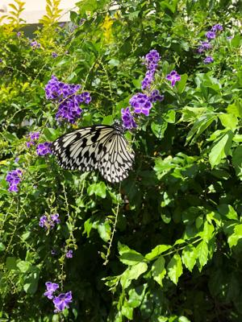
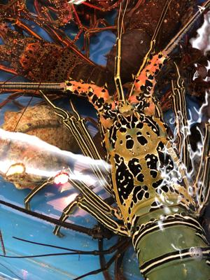
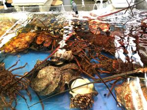
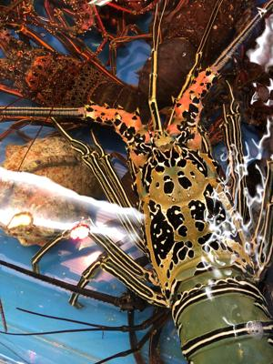
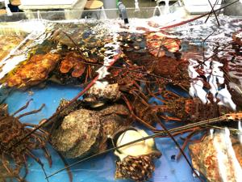

うるがいの話 ある日
最新: 天ぷらうるがいとは 前提知識です
カニの画像をクリックすると『うるがいの話』サイトを表示します|
|
【うるがいの話】 うるがい(ｳﾙｶﾞｲ urugai)とは、『もずくがに』の名前でとても大きくなります。 |
|---|---|
|
|
【Got cat カミマヤーの話】 たながー（ﾀﾅｶﾞｰtanagaa）とは手長えびのことで、何種類かあり大きいのは車 エビぐらいになります。 |

|
【ぶながぁの話】 ぶながー(bunagaa)とは、赤い髪の毛、赤い身体、そして身長は１ｍ２０ｃｍ ぐらい、川の蟹を食べているの目撃された。場所は沖縄県国頭郡大宜味村のと ある村僕の隣近所に住んでいる爺さんから、聞いた話です。 |
|
|
【ギーマの話】 ギーマ(giima)とは、山原の里山に咲くスズランに似た、 花を付けます。実は食べられます、 気が付くと口の周りが紫になっています。 |
2021年10月28日 (木）天ぷら
15:50

 



軽石が大変な事になっている。辺土名漁港が全国バージョンで放送されている
ん、泊魚市から魚が無くなるかも。と飛躍した考え方が頭をよぎる、で泊魚市
へ行く。通りすがり泊ふ頭の海をみるが綺麗、泊魚市の奥にある港をみても軽
石は無い。ふーん、海岸線の全てに軽石が寄っているわけではないんだ。時間
は１１時２０分頃、市の天ぷらを売っているところで天ぷらを買おうと容器を
みるが、いつもの魚とかイカがないようである。イモ天やカボチャなどの野菜
系がある。既に数が少なくなっていたのであっせて『それぞれの種類毎に３個
づつお願いします、と７７０円を支払う。家に帰るとヨメが『魚、イカは？全
て野菜だよ！、チャンと見たの！』と怒っている。食べると、雑に大切りされ
たゴヤーや芋など・・・、そして衣がやたら多く・・・、美味しくない！。失
敗した。でも、刺し身はいつものように美味しく頂いたヨ。